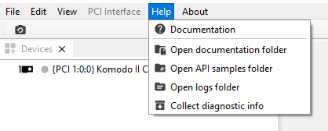

Troubleshooting
Log Files folder
Windows Operating System
To find logs files, go to Open logs folder from the Help menu.

Figure
36 – Logs folder in Help menuLog files folder location: C:\ProgramData\KAYA Instruments\Logs.
Linux Operating System
To find logs files, go to Open logs folder from the Help menu.
Figure
37 – Logs folder in Help menuLog files folder location: /var/log/KAYA_Instruments.
Collect Diagnostic Info
The Collect Diagnostic Info menu option initializes KYInfo script, which gathers all required system information, including Log Files, and generates an archive named "KAYA".This archive can be sent to support to help diagnose and resolve customer issues efficiently.
Figure
38 – Collect diagostic info from Vision Point II Help menuTo collect Diagnostic info use the KYInfo.bat file from folder that located in {KAYA Instruments installation folder}\Common\bin\debug tools
1.It will collect full system information and prepare zip archive
2.
Remarks:
-
By default, installation folder located at C:\Program Files\KAYA Instruments.
-
Diagnostic information archive KAYA.zip location: C:\ProgramData\KAYA Instruments.
-
Installation log files folder can be found: C:\Program Files\KAYA Instruments\Log\Installer.